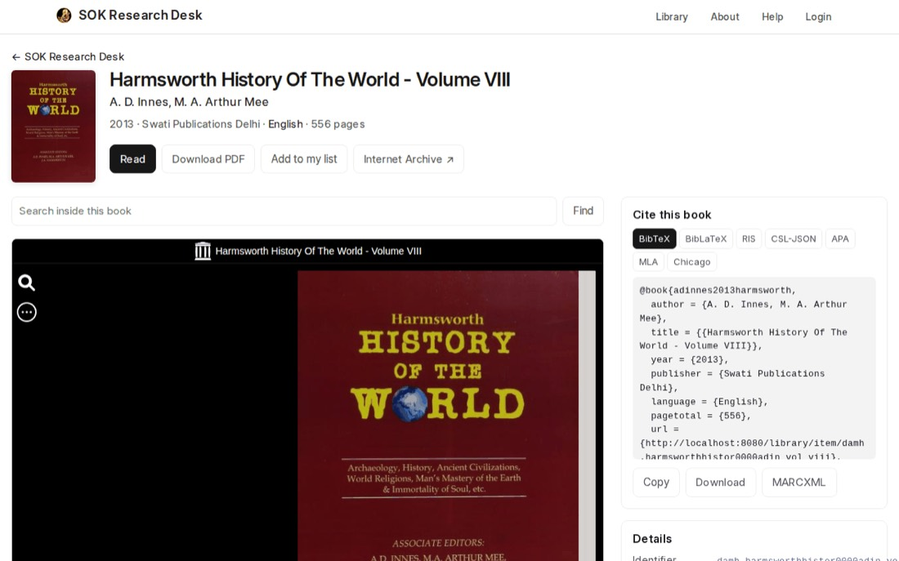
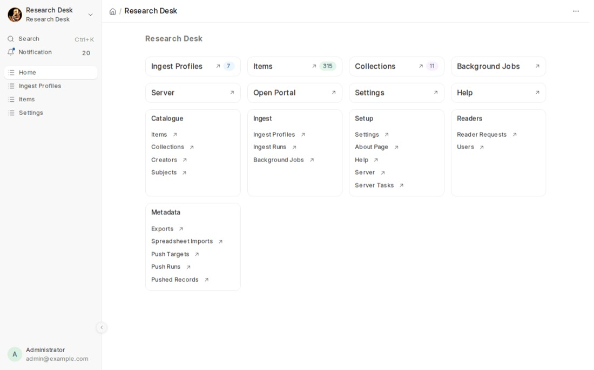

Our software
SOK Research Desk
An open-source digital library, archive and research platform for books, manuscripts, photographs and recordings. Made for Indian languages, open to every language.
Research Desk
Full text of every page, in Kannada, Hindi, Tamil and other languages.
Page-by-page reader, notes, reading lists and the usual citation formats.
People proofread the text and rerun OCR where it is wrong. The software only makes a first draft.
Permanent links, checksums, and a second copy that repairs itself.



Material from where it already lives
OCR is a first draft; a person checks it
Koha, VuFind, Zotero and Mirador can read it
Wikimedia projects
The path from scanner to reader
Free software, MIT licence
Every page is also inside the app, under Help. Docs index · Everything it does · GitHub
About 20 minutes, mostly waiting
Needs 4 GB of free memory, 10 GB of disk, and Docker. A native install works on macOS or Ubuntu.
One script asks a few questions
Press Enter for the defaults. It prints the portal and Desk addresses and the administrator’s password.
Choose what goes in
In the Desk, open Ingest Profiles, then keep the library current with the upgrade script.
# get it
git clone https://github.com/ServantsOfKnowledge/researchdesk.git
cd researchdesk
# install
./install.sh
./install.sh --domain library.example.org # on a server, with HTTPS
./install.sh --edition governance # adds the records-office app
# keep it current
./upgrade.shStatus: before 1.0. It works end to end and is tested against live Servants Of Knowledge data. Installation guide · Roadmap · Changelog